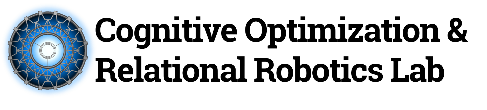

BlackRock

As an analyst in Aladdin Data, architected Python service using Flask and SQL to streamline migration of Astra database management from legacy to Azure DevOps pipelines, to be used internally by over 8000 engineers in the org. Integrated polling and unit testing of functionality to meet coverage and development environment requirements. Analyzed anomaly detection ofreal-world data to identify production client outliers using One-class SVM model.
CORE-Robotics Lab
Exploring explainable AI in RL agents, assisting PhD student Pradyumna Tambwekar, advised by Dr. Matthew Gombolay (CORE-Robotics lab). Utilized specialized Gym environments to simulate actions in a Risk pygame and trained a language model with control codes to explain actions taking by various reinforcement learning agents using a dataset generated by custom context-free grammars.
Aisera
Curated an intent-fulfillment dataset of real user queries from the portals of four tenants as a part of a Search Evaluation project seeking to augment algorithm selection and intelligent named-entity recognition. Developed a casual NLP model based on HuggingFace transformers as an unsupervised recourse layer in the conversational pipeline used by all clients. Built GRPC service for integration into codebase as well as Swagger API documentation for the service. Conducted research and testing for pre-trained closed-domain question-answering models including cdQA (now deprecated) and Haystack; model was incorporated into pipeline.
Youtopian
Worked with the 5-member founding team of JuriAide and Youtopian management as a Conversational AI developer, creating NLP Q&A systems via AllenNLP to extract short answers from any provided context and question. Upskilled the management team of 8 regarding the latest developments in Conversational AI. Currently adding 3D conversational elements to backend chatbot to create interactive customer interface.
TagBox Solutions

Architected CI/CD pipelines for services using Atlassian Bitbucket, Maven repositories, and Liquibase. Leveraged Bash and PostgreSQL to modify databases with scripts and access remote environments through SSH. Streamlined commits and contributed to the organization's version control software. The implemented pipelines were used for every release of a patch, minor version, or major version of software was released by project teams specific to any service provided by the company.
Mannai Corporation

Analyzed SQL data using a custom Java script to interpret CSV spreadsheets; presented dashboards of data patterns. Identified recurring categories of deadweight loss; inferences and analysis were taken into account by superiors trying to optimize their organization's automobile rental and sales.
WGD Analytics
Leveraged specialized Kali Linux toolkits for penetration testing on Windows and Linux systems. Explored vulnerabilities in machines' BIOS passwords, Syskey passwords, browser security, and PHP servers.